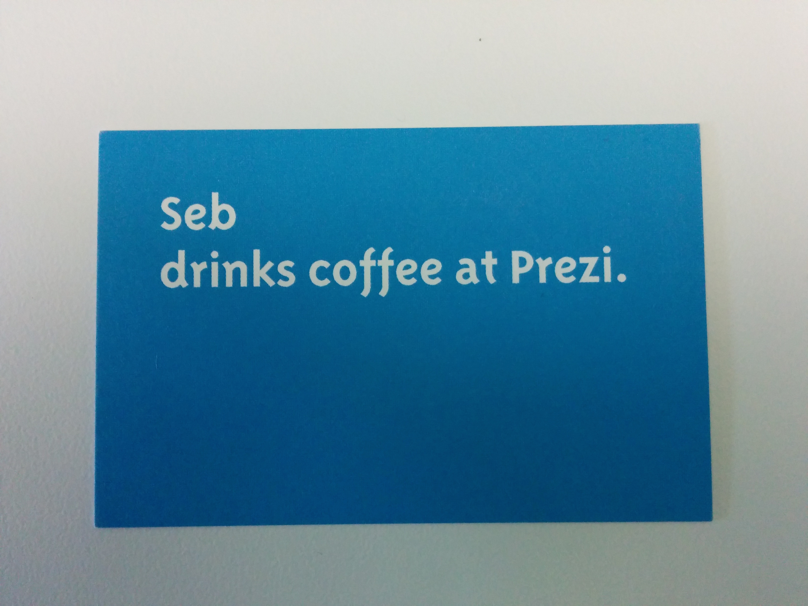

tl;dr: It has been awesome, we are hiring.
As I write this, I have been at Prezi for about 2 months. On the one hand, time has just zoomed past, but on the other hand I feel settled in, as though I have been working here for much longer. Either way, it feels like an ideal time to take a snapshot of my experience so far.

This story starts early this summer, when after a number of online conversations, I was invited to visit Prezi in Budapest for a week on assessment. The preceding conversations did a good job of raising my expectations; everybody visibly enjoyed what they did and conversations with them were both challenging and interesting. I am happy to say I was not let down.
Prezillians (the Prezi family) are responsible for Prezi’s success and culture, so finding the right people is super important. Assessments are Prezi’s way of ensuring the right fit. I had three days to explore an area of the product and recommend improvements to it. Three days might feel like a lot of time for an interview, but I promise you it was worthwhile. While working on the task, I had enough time to really dive in to the company. Although technically it was me that was on assessment, I was assessing Prezi just as much, answering the questions I really cared about such as: “Would I be able to learn from my team?”, “Would I enjoy spending time with them?”, “What are the biggest challenges they are facing?” and “Can I bring value to the company?”. Everybody I encountered was impressively welcoming and freely gave up their time to meet up with me as well as help me with their areas of expertise.
Working on my assessment, I had access to all the resources I needed, from a company laptop to the data that would help me take the right decisions. I was invited to have lunch with different people, dinner and drinks with my team and I was even invited over to dinner at a co-workers home. Everyone I met took an interest in learning more about me, professionally and personally, and freely shared more about themselves. By the end of the week, I had received an offer to join Prezi.
I had the weekend to think about it and was joined in Budapest by my wife Marica to spend some time exploring the city. I was completely sold on Prezi, so now we had to see if we could envision a life together in Budapest. We walked around, explored different neighbourhoods, rested in City Park and talked a lot about our options. The next Monday, I got back to Prezi with my answer, and we started planning our relocation.
The month leading up to my move flew past and before I knew it I was on a plane back to Budapest. I got to spend a few days meeting my team while taking care of some paperwork, but I was soon on a plane to San Francisco. Prezi has two amazing offices, one in Budapest and the other in San Francisco. I would be working closely with our San Francisco based Sales team, so a trip to sync up with them helped us kick things off on the right foot. Trips between offices are not uncommon, in fact all Prezillians get to spend a month every year working from the other office, helping keep the feeling of one company. Although I was only in San Francisco for a week I made the most of my time, visiting the offices of a number of tech companies and attending meetups on Product Management and UX.

As a Product Manager, understanding your target users and the ecosystem of your product are prerequisites to success, so being new to Prezi, I knew I needed to quickly immerse myself in the space. Happily, Prezi understands the importance of understanding our users, and dedicates the people and resources necessary to achieve this. This made my journey of discovery much easier, as I was able to join a research trip to Chicago and experience our users first hand.
Finally back in Budapest, it was time to focus on settling in. Prezi attracts people from all over the world, so they are pretty adept at helping with relocation. Most of the relocation paperwork was taken care of without me needing to lift so much as a finger. Although I had a nice apartment available until I found my own, I was eager to get my own space. Prezi put me in touch with an agency that understood what kind of place I was interested in, arranged viewings and helped in signing the paperwork. Within just a few days I had a key, and a space to call my own.
Work has been a lot of fun and an interesting challenge. There was a lot to do as I got up to speed and I will admit to having lost track of time a few times while digging through research transcripts and querying our data warehouse. My fellow Prezillians have helped me keep balance though, generally taking the form of an invitation for weeknight dinners or weekend outings. I have also enjoyed some quiet time to myself, cooking or exploring the city by bike and on foot. I was also able to take advantage of Prezi’s flexibility to spend some time working from Malta, letting me spend time with my family, especially Marica who hadn’t yet moved to Budapest.
All in all, a busy, but very worthwhile experience so far. I am eager to see what comes next!
Did I mention we are hiring?